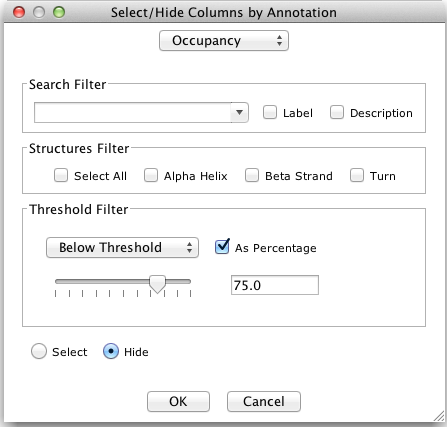
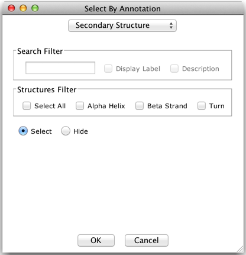

Select/Hide Columns by Annotation
The 'Select/Hide by Annotation' window allows columns to be selected or hidden according to annotation rows on the alignment. The dialog box is opened via "Select→Select/Hide Columns by Annotation...", and different filters are then presented for filtering data according to the selected annotation row.
|  |  |
The drop down menu lists the annotation available on the alignment. Sequence associated annotation rows will be shown with the sequence ID appended to the annotation label. It is only possible to select one row at a time.
If an annotation with numeric values is selected, the threshold
filter option is activated. For other types of annotation, use the
text box and secondary structure check boxes (right). The radio
buttons at the bottom of the dialog specify the action applied to
columns matching the query.
Note: annotation
containing only numeric labels (e.g. T-COFFEE column confidence
scores) will not be treated as quantitative data. You will need to
enter search expressions to select columns in this case.
Hit 'Cancel' to restore the alignment view to its previous state before any filtering was applied.